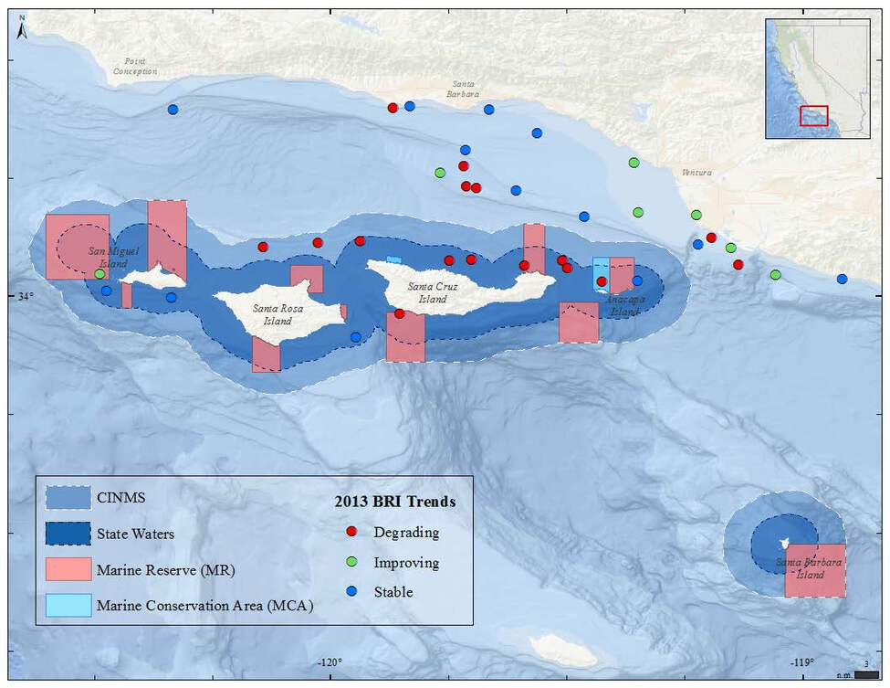

Although we can't always see them, infauna are the organisms that live within the sediment itself. From edible clams to microscopic worms, there's a whole world hidden under the ocean floor.
Benthic Response Index - Trend by region

A figure showing the relative impact of human activity on the seafloor across different regions of the Southern California Bight, using the Benthic Response Index as an indicator. Figure credit: K. Schiff/SCCWRP
Click for Details
Comparisons of the Benthic Response Index (BRI), a diversity index of contaminant tolerant and sensitive infauna, among different regions of the Southern California Bight is shown. Island shelf sites (upper right) had been at reference levels (highest ranking) until 2013, when approximately 30 percent of sites were reclassified as low impact. Other regions in the bight did not experience such a large BRI decline as the island shelf, which indicates potential new impacts to sediments around southern California Islands. For more information, consult Figure App.E.11.10 in the CINMS 2016 Condition Report.Benthic Response Index - Trend by site

A map showing the relative impact of human activity on the seafloor across different regions of the Southern California Bight, using the Benthic Response Index as an indicator. Data Source: K. Schiff/ SCCWRP; Map credit: M. Cajandig/NOAA.
Click for Details
The Southern California Water Research Project uses a diversity index of tolerant and sensitive infauna, also known as the Benthic Response Index (BRI), to gauge the ecosystem impact from anthropogenic contamination. The map above shows the 2013 locations of samples and the BRI trends at each location. Previously, island sites were all considered 100 percent pristine (reference), but now roughly 70 percent of samples are considered degraded from that status. Decline in BRI was particularly prevalent around Santa Cruz Island. This decline in BRI was not mirrored in other regions in southern California. The most recent samples, collected in 2013, found that ten of the 15 sites in Channel Island National Marine Sanctuary had infaunal community compositions that were shifting towards species more tolerant of degraded conditions (red) compared to the samples collected previously. For more information, consult Figure App.E.11.9 in the CINMS 2016 Condition Report.Benthic Response Index - Condition by site

A map showing sediment sample locations and their respective Benthic Reponse Index sites from a 2013 Southern California Bight-wide survey. The Benthic Response Index is a measure of the impact of humans on the seafloor. Figure credit: K. Schiff/SCCWRP.